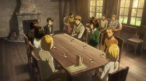

Hotel Mitras |
Inicio | Habitaciones | Iniciar Sesión | Información |
| Crear Cuenta |
Kenny le tendió una emboscada a Levi, forzándolo a hacer un recorrido por Stohess hasta entrar y ocultarse en una taberna con la que se cruzó en su camino. Levi se esconde debajo del mostrador. Los dos pronto comienzan a hablar entre sí en diálogos llenos de sarcasmo, burlándose mutuamente. Kenny le lanza una silla a Levi, a pesar de no conocer su posición, mientras reanuda sus anécdotas de como se cansaron de vivir en la basura y encontraron a alguien que los salvó, Levi parece estar pendiente de sus palabras pero en realidad se fijaba en el reflejo de las botellas para poder apuntar con un rifle a Kenny. El disparo lo expulsa fuera del local y queda desmayado por breves momentos.
El Sótano de Grisha mantenía el sótano bajo llave para Eren, pero después de la caída de la Muralla María, este le da la llave y le confía el retomar la muralla y llegar al sótano. Poder encontrar estos secretos fue una de las metas del Cuerpo de Exploración durante la expedición que guio a la Batalla del Distrito Shiganshina.
Grisha mantenía el sótano bajo llave para Eren, pero después de la caída de la Muralla María, este le da la llave y le confía el retomar la muralla y llegar al sótano. Poder encontrar estos secretos fue una de las metas del Cuerpo de Exploración durante la expedición que guio a la Batalla del Distrito Shiganshina.
La Noche de la operación para retomar el muro. Las preparaciones para la operación de la retoma de el Muro María están casi listas y entre los altos mandos del ejército, discuten que deben hacer con el suero de titán que Levi recibió de Kenny poco antes de su muerte. La noche antes de la partida, el Cuerpo de Exploración decide relajarse un poco mientras comen juntos y se divierten; al acabar la cena, Eren y sus compañeros recuerdan el pasado mientras Armin habla sobre aquel viejo sueño de ver el mar y las demás cosas que existen en el mundo exterior, sueño que en ese mismo instante se convierte en promesa. Al amanecer, los exploradores son alentados por los civiles de Trost y en ese mismo instante parten hacia el Distrito Shiganshina, en donde sus enemigos se encuentran esperándolos.
El Culto del Muro es una facción religiosa con gran cantidad de influencia religiosa y política dentro de los muros. Algunos de los miembros de este culto poseen conocimientos sobre las murallas que se han ocultado al público general.
Los miembros del Culto del Muro creen que las murallas son una divinidad, estas mismas no deben ser intervenidas de ninguna manera por seres humanos. Esta facción religiosa ha reunido adeptos rápidamente desde su creación, y gracias a eso intervienen mucho en las decisiones del gobierno. Se los ve presentes en muchas partes de los distritos.
En su juicio, Eren menciona que hace cinco años nadie prestaba atención al Culto del Muro, pero que en aquel momento se habían hecho muy poderosos, posiblemente debido al miedo provocado por la caída de la Muralla María.
El Salón es, como su nombre lo indica, una ciudad que se encuentra bajo tierra, en la Muralla Sina.
Después de la misteriosa aparición de los titanes en la Muralla Rosa, miles de refugiados se vieron obligados a trasladarse hacia la Ciudad Subterránea, con el fin de evitar perdidas humanas, sin embargo, al poco tiempo y por la increíble cantidad de gente, la comida empieza a escasear, por lo que muchos de los refugiados empezaron a robar para evitar morir de hambre, a lo que la Policía Militar tuvo que interferir.
El mar es una enorme extensión de agua salada que separa la isla de Paradis de Marley y el resto del mundo.
El océano cubre el setenta por ciento de la superficie del planeta. A diferencia de los ríos y lagos de agua dulce en Paradis, el océano está compuesto de agua salada. Descrito por Armin, contiene tanta sal que ningún comerciante podría agotarla en toda su vida. También existen muchas especies de peces y otras formas de vida acuáticas que no pueden encontrarse dentro de las murallas.